The worked-example companion to 09 — The Stiffness Matrix Is a Precision Matrix and 10 — Kick It, or Watch It Jitter. Report 09 built the dictionary on the 1-D chain, where every object is bidiagonal and preconditioning is theater; report 10 measured the dictionary in thermal noise. This report walks the whole dictionary through the smallest 2-D problem where preconditioning is real: the 8×8 interior grid ($n = 8$, $N = 64$, everything dense and inspectable), then scales the conclusions to the suite's canonical $n = 32$ ($N = 1024$) on a hot/cold-rod problem built for pictures. Notation is 09/10's throughout: $h = 1/(n+1)$, $A$ = Kronecker-sum Laplacian $/h^2$ (poisson_2d, 01/02), $\Sigma = A^{-1}$ the covariance of the Gibbs field $u \sim \mathcal N(0, A^{-1})$, $B = I - \mathrm{diag}(A)^{-1}A$ the two-sided regression matrix (= Jacobi iteration matrix), phiL2R = sequential regression on predecessors (modified Cholesky of $\Sigma$), phiR2L = regression on successors (= $\mathrm{chol}(A)$), reversal identity $\mathrm{chol}(A^{-1}) = P L^{-\top} P$ — all per the companion notebook whitening_inverse_transposed.nb. Every claim below is machine-checked by python/experiments/grid_regressions_multiscale.py (40 checks, all PASS, fully deterministic — no sampling — ~2 s; numbers in results/grid_multiscale.json) or independently by the Wolfram script mathematica/grid8_regressions.wls (6 checks, all PASS), which reproduces the two ArrayPlots that prompted this report.
Take $n = 8$: 64 unknowns, lexicographic index $k = 8i + j$ for grid row $i$, column $j$ (0-based). Two 64×64 pictures contain, between them, the entire subject.
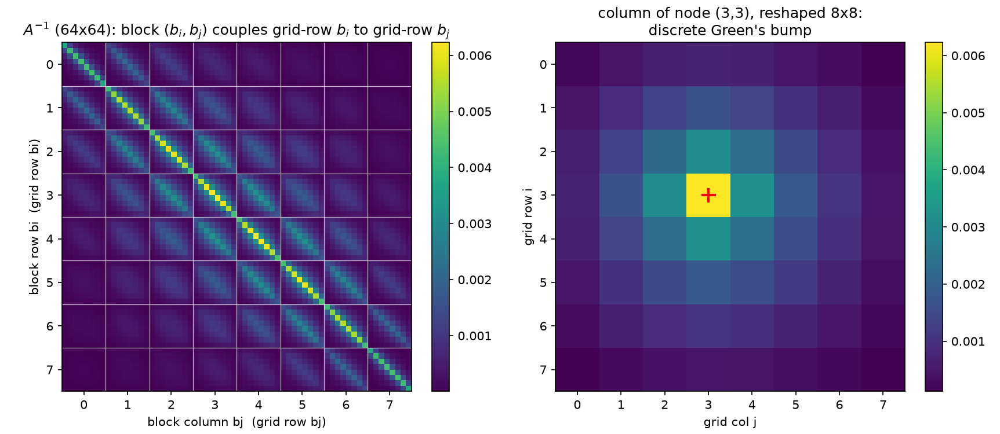
(Independent Wolfram rendering, ArrayPlot[Inverse[A]]:
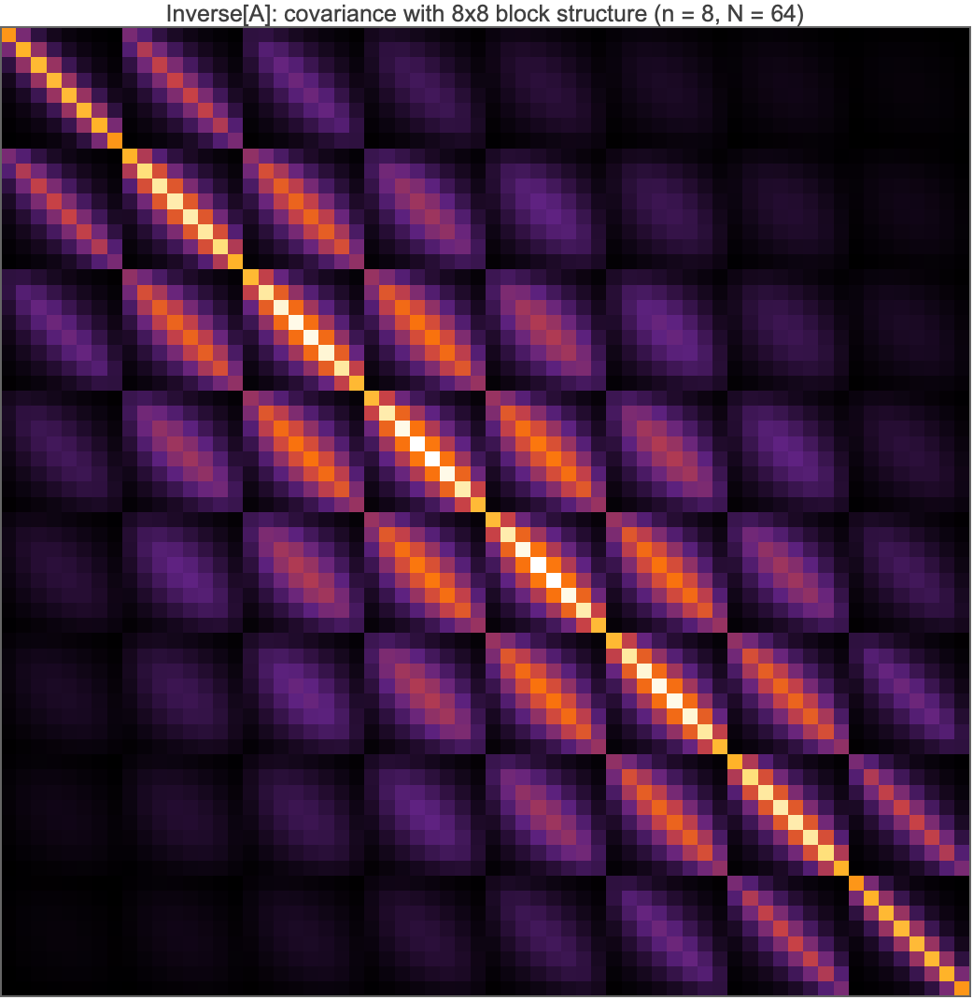
.)Four layers of structure, each machine-checked:
Every pixel is positive. $\min(A^{-1}) = 6.885\times10^{-6} > 0$ (verified in both Python and Mathematica). This is the M-matrix property of the 5-point Laplacian: $A$ has positive diagonal, nonpositive off-diagonals, and is nonsingular with $A^{-1} \ge 0$ — physically, heat injected anywhere raises the temperature everywhere; probabilistically, all 64 variables are positively correlated (an "association" every attractive Gaussian field has). The matrix is also exactly symmetric, as a covariance must be.
The 8×8-block grid is the row structure of the lattice. With lexicographic ordering, entry $(k, k')$ couples node $(i,j)$ to node $(i',j')$, so the matrix tiles into an $8\times8$ array of $8\times8$ blocks: block $(b_i, b_j)$ is the covariance between grid-row $b_i$ and grid-row $b_j$ (white gridlines in the figure). The diagonal blocks are brightest, and the block Frobenius norms decay monotonically away from the diagonal — from $0.0200$ (center diagonal block, $b_i = b_j = 3$) down to $0.00039$ (corner block $(0,7)$, rows that share nothing but the far walls; all 64 block norms are in part_a.greens.block_frobenius_norms_8x8 of the JSON). Within each block the same story repeats one level down: same-column pixels brightest, decay with column distance. The Kronecker-sum structure of 02 is literally visible as self-similarity of the block pattern.
One column is a Green's function. The right panel reshapes column $k_c = 27$ — node $(3,3)$ — into the 8×8 grid: a single bump, maximal at the source and monotonically decaying along the source's row and column (checked coordinate by coordinate), pinned toward zero at the Dirichlet walls. This is $A^{-1}e_{k_c}$, the kick response of 10 §1 — and simultaneously $\mathrm{Cov}(u_{(3,3)}, u_{\cdot})$, the covariance of node $(3,3)$ with the rest of the field. The global maximum of the whole matrix sits on the diagonal at the center ($6.229\times10^{-3}$ — the center node has the most room to fluctuate), the global minimum at the corner-to-opposite-corner entry.
The long-range number. Corner node $(0,0)$ covaries with its nearest neighbor $(0,1)$ at $1.290\times10^{-3}$ and with the opposite corner $(7,7)$ at $6.885\times10^{-6}$ — a ratio of only 187.3 across the entire domain diameter (14 lattice steps). No pixel of this matrix is zero or even negligible at rendering precision. That is the marginal, many-paths side of 10 §7: sparse conditional structure, dense marginal structure (09 §2) — the picture any local solver has to reckon with.
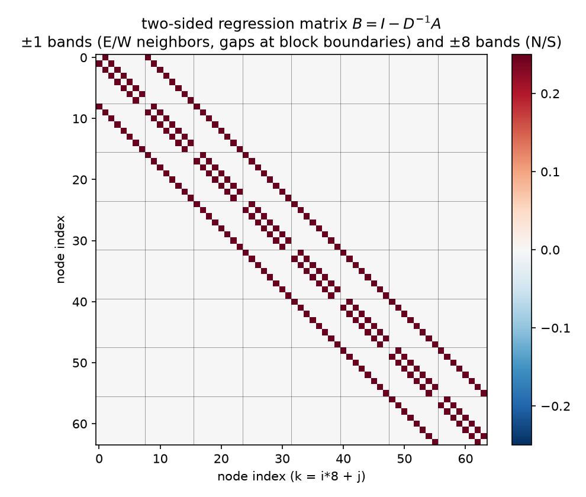
(Wolfram rendering:
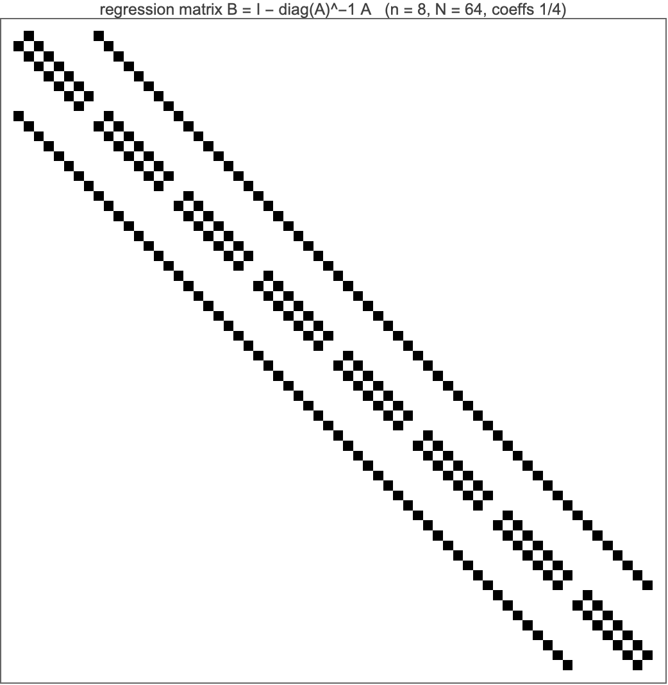
.)$B = I - \mathrm{diag}(A)^{-1}A$ is 09 §3's regression matrix, and on the grid it is verified to be exactly the stencil: row $k$ has the value $1/4$ at each in-grid stencil neighbor of node $k$ (4 of them for interior nodes, 2–3 at edges and corners), zero elsewhere, zero diagonal — the Wolfram check prints max |coeff − 1/4| = 0. and confirms the nonzero pattern coincides with the 5-point off-diagonal support of $A$ (224 positions), bit-exactly. The picture therefore has exactly three gray levels, and its geometry decodes as:
Statistically, row $k$ is the full conditional of the Gibbs field with the source lift:
$$\mathbb E[u_k \mid u_{-k}] \;=\; \frac{u_N + u_S + u_E + u_W}{4} \;+\; \frac{h^2}{4}\,b_k, \qquad \mathrm{Var}(u_k \mid u_{-k}) \;=\; \frac{1}{A_{kk}} \;=\; \frac{h^2}{4} \;=\; 3.086\times10^{-3},$$
the 2-D mean-value property in regression costume (09 §3). The conditional variance is verified two independent ways: as $1/A_{kk}$, and by brute-force Schur complement of $\Sigma$ at node $(3,4)$ — they agree to $10^{-15}$. And the notebook identity $A = (I - B)\,D$, $D = \mathrm{diag}(A)$, holds to machine precision in both languages: the precision matrix is the stack of these 64 regressions, and $B$ is the Jacobi iteration matrix — Jacobi-the-solver replaces every node by this conditional mean simultaneously, Gibbs-the-sampler does it with the $h^2/4$ noise restored (10 §2.3).
So the two ArrayPlots are the two parameterizations of one Gaussian: $B$ (with $D$) is the sparse conditional side, $A^{-1}$ the dense marginal side. Everything that follows is about crossing between them cheaply.
The bridge between the two pictures is the Neumann series. Since $A = (I-B)D$,
$$A^{-1} \;=\; \Big(\sum_{k=0}^{\infty} B^k\Big)\,D^{-1}, \qquad \rho(B) \;=\; \frac{\cos(\pi h) + \cos(\pi h)}{2} \;=\; \cos(\pi/9) \;=\; 0.939693\ (\text{verified to } 10^{-12}).$$
Because $B$'s only nonzero entries are $1/4$ on lattice neighbors, $(B^k)_{pq}$ is exactly $(1/4)^k \times$ (the number of $k$-step lattice walks from $p$ to $q$ that never leave the interior — walks touching a Dirichlet wall are killed). The identity says: the covariance of two nodes is the discounted count of all random-walk paths connecting them, the computable form of 10 §7's many-paths story. Truncating at $K$ terms keeps only paths of length $\le K$:
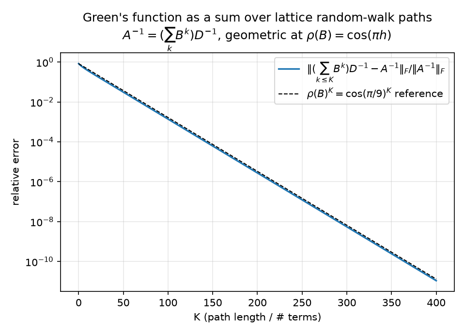
Measured: the partial sums converge to the dense inverse at relative Frobenius error $0.148$ at $K{=}25$, $1.39\times10^{-3}$ at $K{=}100$, $1.09\times10^{-11}$ at $K{=}400$, and the decay is geometric with fitted rate $0.939693$ over $K = 100\ldots300$ — matching $\rho(B) = \cos(\pi/9)$ to seven digits (checked within 0.2%). (The figure is semilog, not log–log: a geometric law $\rho^K$ is a straight line on semilogy, which is what makes the rate comparison against the dashed $\cos(\pi/9)^K$ reference legible.)
Two readings of the same number. Solver: $\cos(\pi/9)$ is the Jacobi convergence rate — only ~6% of the error removed per sweep even at this tiny $n$, and $\to 1 - \pi^2h^2/2$ as $h \to 0$: critical slowing down, 10 §6. Field: the correlation between distant nodes is carried by long walks; any method that truncates the walk sum at short range (every method in §4) must mismodel exactly the smooth, long-wavelength content — the error mode we will see lingering in §6's pictures.
Now order the nodes lexicographically and run 09 §4.2's sequential regressions. On the chain, regressing $u_i$ on its successors needed one regressor and $L = \mathrm{chol}(A)$ was bidiagonal. On the grid the graph is not a tree, and the whitening rows
$$z_k \;=\; L_{kk}u_k + \sum_{j>k} L_{jk}\,u_j, \qquad \text{coefficients } -L_{jk}/L_{kk}, \quad \text{innovation sd } 1/L_{kk}$$
go long-range. Measured anatomy of $L = \mathrm{chol}(A)$ at $n=8$ (confirmed independently by the Wolfram script: 519 nonzeros, bandwidth 8, 343 fill entries):
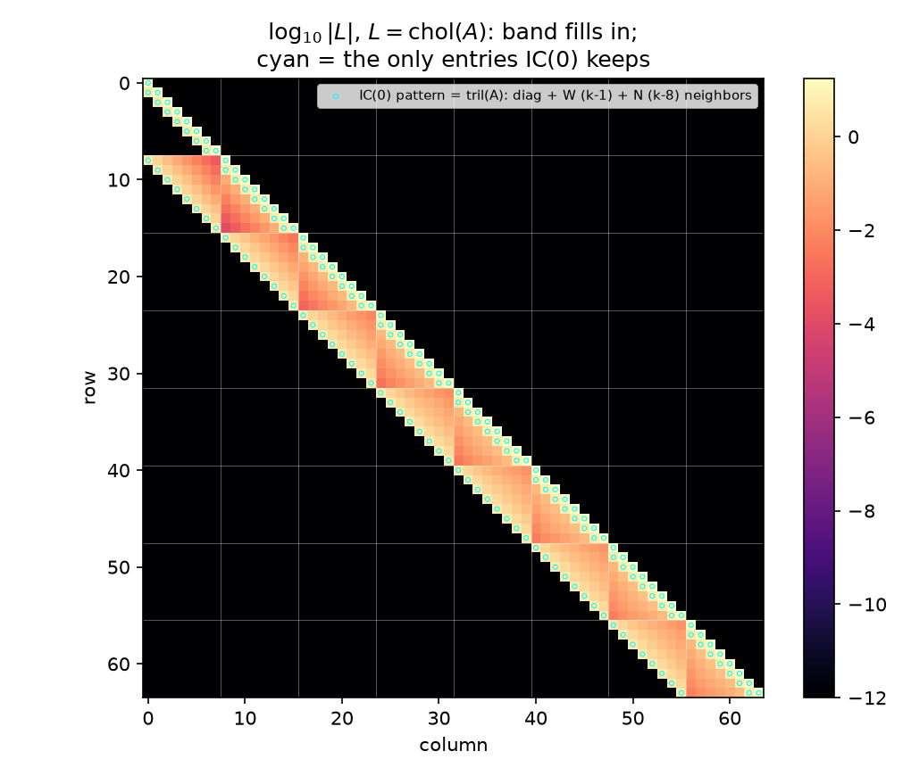
(Wolfram rendering of the same object:
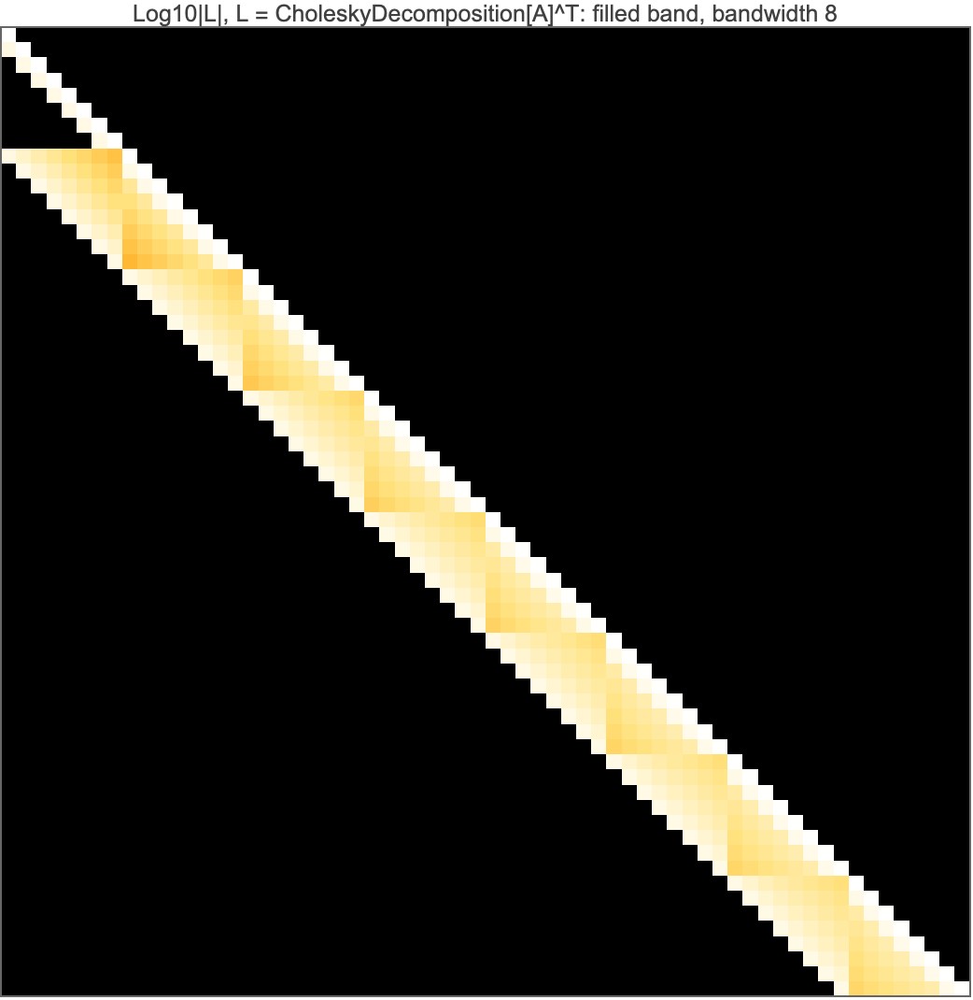
.)The heatmap of $\log_{10}\vert L\vert $ shows the filled band; the cyan circles outline the only entries $A$'s own lower pattern contains — the diagonal plus the W ($k{-}1$) and N ($k{-}8$) couplings. Everything else inside the band is marginalization-induced regression weight.
The wavefront profile. How big are those fill coefficients? The $\le 8$ successors of an interior node $k = (r,c)$ are the remainder of its own grid row plus the leading nodes of the next — the elimination wavefront. Sorting them by lateral distance (how far the predicting node sits, within the wavefront, from the predicted node's column; lateral 0 = the node $(r{+}1, c)$ directly in the next grid row, flat offset $+8$), the mean $\vert {\text{coefficient}}\vert $ over interior rows $r = 1..6$ decays monotonically (checked):
| lateral distance | 0 | 1 | 2 | 3 | 4 | 5 | 6 | 7 |
|---|---|---|---|---|---|---|---|---|
| mean |coef| | 0.2995 | 0.2191 | 0.0265 | 0.0112 | 0.0050 | 0.0024 | 0.0011 | 0.0005 |
Indexed by flat offset $d = 1..8$ instead, the same numbers form a U: $0.2941,\ 0.0107,\ 0.0049,\ 0.0050,\ 0.0109,\ 0.0296,\ 0.0894,\ 0.2995$ — large at $d=1$ (the E neighbor) and $d=8$ (the next-row neighbor), small in the middle — because the flat offset conflates lateral distance with the row wrap; lateral distance is the reading under which the decay is monotone and meaningful. The content: the two stencil successors carry coefficients ~0.3 each; the fill coefficients are real but decay fast (~one order of magnitude by lateral distance 2, ~600× by distance 7). The exact whitener is quasi-local. That is simultaneously why incomplete factorizations work at all (§4: the dropped mass is small) and why they cannot be exact (it is not zero).
The bidirectional story survives intact — upgraded to a symmetry of the square. All of 09's chain identities re-verify on the grid:
Incomplete Cholesky with zero fill keeps only the cyan-circled entries of the heatmap: each node's whitening row may use its W and N stencil predecessors only (equivalently, by the §3 rotation, each $u_k$ is regressed on its successor stencil $\{k{+}1, k{+}8\}$ — the two comparisons are verified to coincide via $PAP = A$). Measured at $n = 8$:
| quantity | value |
|---|---|
| $\Vert L_{\mathrm{IC}} - L\Vert _F/\Vert L\Vert _F$ on the kept pattern | 0.0391 |
| dropped mass $\Vert L_{\text{off-pattern}}\Vert _F/\Vert L\Vert _F$ | 0.0848 |
| $(L_{\mathrm{IC}}L_{\mathrm{IC}}^\top)_{ij} = A_{ij}$ on $A$'s pattern | exact (checked) |
| $\kappa(A) \to \kappa(M_{\mathrm{IC}}^{-1}A)$ | $32.16 \to 3.68$ |
The classical defining property — the incomplete factors reproduce $A$ exactly on $A$'s own sparsity pattern and simply have nothing to say off it — is verified entrywise. Statistically: IC(0) is a sparse autoregression that gets every retained normal equation right and drops the 8.5% of whitening mass living on the fill, and that costs a factor ~9 in condition number rather than the ~$\infty$ a naïve reading of "343 of 519 entries discarded" might suggest, because §3's wavefront profile says the discarded coefficients are the small ones.
The Vecchia cross-check. 09 §6 identified IC(0) with the Vecchia approximation — the KL-optimal sparse factor is the truncated regression factor, coefficients read from exact $\Sigma$ submatrices (Schäfer–Katzfuss–Owhadi). On the 1-D chain the two coincide exactly (no fill to disagree about). On the grid the experiment measures, for every node, the covariance-side regression of $u_k$ on $\{k{+}1, k{+}8\}$ against IC(0)'s column coefficients $-L_{jk}/L_{kk}$:
same sparsity pattern, same innovation scales to $2.40\times10^{-3}$ — but measurably different coefficients: max deviation $8.32\times10^{-2}$, mean $6.11\times10^{-2}$, on coefficients of typical size $0.34$ — i.e. ~22% relative at the worst interior nodes (e.g. $(3,5)$).
This deviation is a feature of the report, not a bug of the code: it is the machine-checked boundary of 09's identification. IC(0) enforces $LL^\top = A$ on the pattern (an algebraic constraint on the precision side); Vecchia solves each little $2\times2$ generalized least-squares problem exactly on the covariance side (the KL-optimal choice). On a chain the two criteria have the same solution; on a graph with fill they part ways, by about a fifth of a coefficient here. Both remain legal SPD surrogates, both whiten approximately — and 10 §5 already raced the Vecchia one (fitted from noise, 30 iterations) against everything else.
What no local predictor can model. IC(0)'s regressions see two neighbors. The covariance they are asked to whiten has a 187:1 corner-to-corner range carried by arbitrarily long walks (§2). The residual mismatch is therefore concentrated on the smooth end of the spectrum — short regressions capture the stencil physics (the rough modes) and systematically miss the domain-scale modes that only long walks know about. That is not hand-waving; §6 measures it: at $n = 32$, after 15 IC(0)-PCG iterations the remaining error is, by amplitude, 91% a single smooth eigenmode. A local whitener leaves a smooth ghost. Which raises the obvious question — what would a global but cheap regressor buy?
Regress the field on one scalar: its own global mean $\bar u = \tfrac1N \mathbf 1^\top u$. The least-squares loading of node $i$ on this regressor is
$$\beta_i \;=\; \frac{\mathrm{Cov}(u_i, \bar u)}{\mathrm{Var}(\bar u)} \;=\; \frac{(\Sigma\mathbf 1)_i / N}{\mathbf 1^\top \Sigma \mathbf 1 / N^2},$$
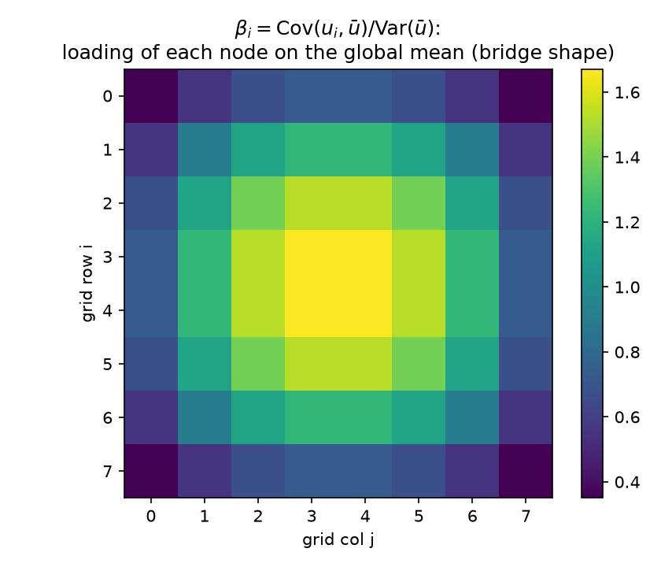
and the loading map is verified to be bridge-shaped: maximal (1.671) at the four center nodes, minimal (0.351) at the corners, center-to-edge-midpoint ratio 2.29 — the 2-D dome that is the grid's answer to the Brownian-bridge variance profile of 09 §2. Center nodes co-move with the global mean more than one-for-one ($\beta > 1$); corners, pinned by two walls, barely participate. Already a lesson: "subtract the average" should not subtract it uniformly — the statistically correct subtraction is $\beta_i \bar u$, a shaped correction.
How much does it explain? Conditioning $\Sigma$ on $\bar u$ (rank-one covariance update) removes 15.2% of the total variance ($1 - \mathrm{tr}\,\Sigma_{\mathrm{res}}/\mathrm{tr}\,\Sigma$). One number cannot summarize a field — but it is the right kind of number: it is exactly the long-range part. Refine the regressor set to the sixteen 2×2-block averages and the variance explained jumps to 56.7% (checked: $0.152 \to 0.567$). Sixteen coarse numbers carry more than half the field's energy.
The sharper diagnostic is what conditioning does to correlation length:
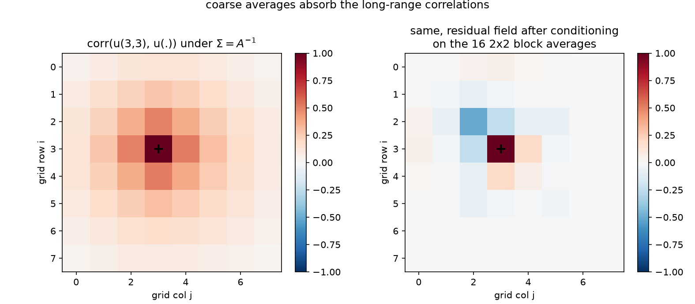
Left: $\mathrm{corr}(u_{(3,3)}, u_{\cdot})$ under $\Sigma$ — the positive halo spans the domain; mean $\vert {\mathrm{corr}}\vert $ at Chebyshev distance $\ge 3$ from the node is 0.098. Right: the same node in the residual field after conditioning on the 16 block averages — the halo is gone; far-field mean $\vert {\mathrm{corr}}\vert $ collapses to 0.011, a 8.9× drop (checked at $< 0.25\times$). Coarse averages absorb the long-range dependence, leaving a short-range residual field — precisely the component a local whitener (§4) is good at. The division of labor could not be cleaner, and it is the statistical case for a two-level method: let block averages model the walks that are long, let the stencil regressions model the walks that are short.
Assemble that division of labor as an additive two-level preconditioner on the canonical $n = 32$ grid. Coarse space: $Z$ = the 64 columns of 4×4 block-average indicators; Galerkin coarse operator $A_c = Z^\top A Z$ (the coarse correction $Z A_c^{-1} Z^\top$ is invariant to column scaling of $Z$, so "average" vs "indicator" is immaterial); note $Z A_c^{-1} Z^\top A$ is the $A$-orthogonal projector onto the coarse space — regression on the coarse averages in the energy inner product. Candidates, all run to $\Vert r_k\Vert /\Vert b\Vert \le 10^{-10}$ on §6's hot/cold-rod right-hand side through the suite's pcg (all five converge; all match spsolve to $\sim10^{-11}$; $\kappa(M^{-1}A)$ from the dense generalized eigenproblem):
| $M^{-1}$ | model it encodes | iterations | $\kappa(M^{-1}A)$ | spectrum of $M^{-1}A$ |
|---|---|---|---|---|
| none | — | 76 | 440.69 | $[19.7,\ 8692.3]$ |
| coarse-only: $z_1(z_1^\top A z_1)^{-1}z_1^\top + \theta I$, $z_1 \propto \mathbf 1$, $\theta = h^2/4$ | one global regressor + i.i.d. residual | 76 | 183.90 | $[0.0109,\ 1.995]$ |
| two-level: $\mathrm{diag}(A)^{-1} + Z A_c^{-1} Z^\top$ | neighborhood averages + i.i.d. residual | 48 | 19.02 | $[0.105,\ 1.996]$ |
| IC(0) | stencil regressions only (§4) | 39 | 39.81 | $[0.0303,\ 1.205]$ |
| two-level: $M_{\mathrm{IC}}^{-1} + Z A_c^{-1} Z^\top$ | stencil regressions and neighborhood averages | 32 | 11.05 | $[0.180,\ 1.993]$ |
The verified ordering is $\text{none} \ge \text{coarse-only} \ge \text{two-level Jacobi} \ge \text{IC(0)} \ge \text{two-level IC(0)}$, and adding the coarse level improves the $\kappa$ of both smoothers it is added to. Three morals:
Coarse-only barely helps — and on this right-hand side, provably not at all. A single global regressor models exactly one direction of a 1024-dimensional field; deflating it improves the worst case ($\kappa$: $440.7 \to 183.9$, a 2.4× cut from removing the lowest even mode) but leaves the other 1023 variance ratios untouched. And here even that one direction goes unused: the rod RHS is exactly odd under the 180° rotation ($Pb = -b$, checked — §3's automorphism again), and because $PAP = A$, parity propagates through the iteration: starting from odd $b$, every residual $r_k$ stays odd (inductively — $A$ preserves parity, and on an odd residual the even regressor contributes nothing, so $M^{-1}$ acts as $\theta I$), while $z_1 \propto \mathbf 1$ is even, and odd is orthogonal to even. Hence $z_1^\top r_k = 0$ for all $k$ ($\mathbf 1^\top b = 0$ included) and the preconditioner degenerates to $M^{-1}r = \theta r$ — a scalar, to which PCG is invariant (04). Iterations: 76 = 76, exactly (the dashed curve in §6's figure sits on the CG curve). $\kappa$ is a worst-case-RHS bound; this RHS never excites the deflated mode. A regressor orthogonal to the data teaches the solver nothing.
Clustering beats $\kappa$. Two-level Jacobi has less than half IC(0)'s condition number (19.0 vs 39.8) yet needs more iterations (48 vs 39): IC(0)'s spectrum is clustered near 1 with a thin lower tail, and CG eats clustered spectra (04, 05 §1, and the NPO result of 06, which wins entirely by clustering). Both checks — the iteration ordering and the $\kappa$ ordering — are asserted separately in the script for exactly this reason.
The sum does what neither part can. Two-level IC(0) is the best on every column: 32 iterations, $\kappa = 11.05$, lowest eigenvalue lifted 6× above IC(0)'s ($0.180$ vs $0.030$ — the coarse regression props up precisely the smooth tail that the local whitener leaves sagging), while the upper edge stays at ~2 (the additive combination at most doubles a normalized mode). Read as a model, this preconditioner is one sentence:
Predict each temperature from its stencil neighbors and from its neighborhood average; whiten by subtracting both predictions. $M^{-1} = $ local conditional regressions (IC(0)/Vecchia, §4) $+$ coarse least-squares regression ($Z A_c^{-1}Z^\top$, §5.1), applied additively to the residual inside PCG.
(Report 12 strips the CG acceleration off this whole table and re-runs each model as a bare stationary Richardson iteration, where its quality is a naked spectral radius — IC(0)'s 39 PCG iterations become 706 sweeps at $\rho = 0.9697$, and the additive Jacobi+coarse combination runs at $\rho = 0.9024$.)
Recurse the idea. The coarse operator $A_c = Z^\top A Z$ is itself a (Galerkin) Laplacian-like matrix on the 8×8 grid of block averages — a 64-variable version of the same problem, whose own smooth modes can be handled by its block averages, and so on down. Iterating "local regression + regression on averages" through a hierarchy of scales, with the exact coarse solve replaced by recursion, is multigrid — coarse-grid correction is inference on aggregated variables (09 §8's last dictionary row, now with measured numbers behind it), and the smoother/coarse-grid division of labor is §5.1's variance decomposition run at every level. That is 05 §5's "the right answer for Poisson is multigrid" with a statistical why: each level's regressors explain the octave of correlation lengths that the level below cannot reach (here: 15% for the top scalar, 57% by the 16 block averages, the short-range remainder for the stencil). And it locates the learned version precisely: the NAMG architecture of 06 hard-wires this same topology and learns the restriction — its attention weights $R = A\cdot E_\theta$ are learned coarse regressors, data-dependent block averages chosen by training rather than by geometry, one rung up the same ladder (10 §5) from our hand-built $Z$.
The narrative problem, built so every claim above is visible as a picture: on the $n = 32$ grid, a hot rod (+1 source on the 6 nodes $(3..8,\ 4)$, near the NW corner) and a cold rod (−1 on $(23..28,\ 27)$, near the SE corner).
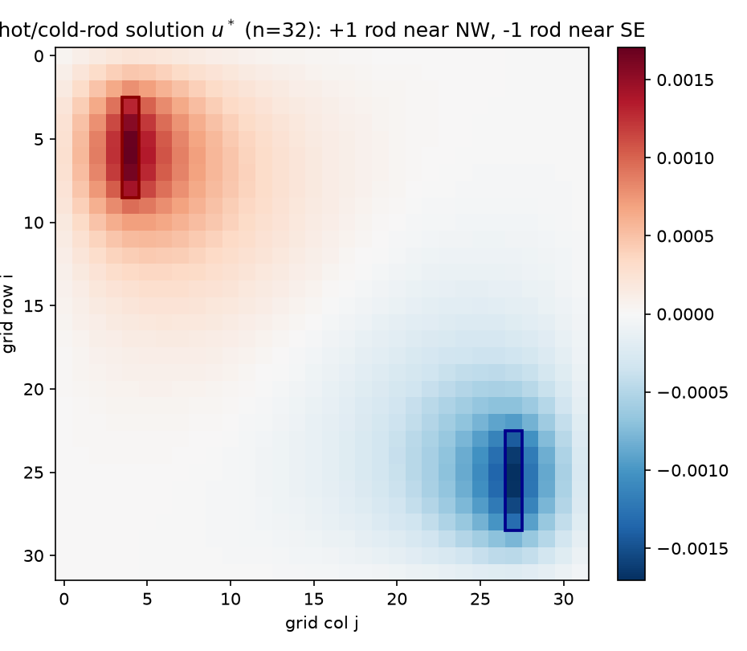
The solution (checked): global maximum $+1.706\times10^{-3}$ on the hot rod, global minimum $-1.706\times10^{-3}$ on the cold rod — equal magnitudes, because the configuration maps onto its own negative under the 180° rotation — positive over the hot half, negative over the cold, with the zero level set threading between. This is $A^{-1}b$: the two rods' Green's bumps (§1.1) superposed with signs.
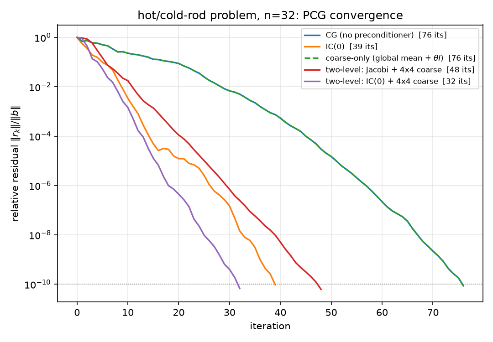
The convergence curves realize §5.2's table: coarse-only (dashed) lies exactly on the plain-CG curve, the two-level curves drop steepest earliest, two-level IC(0) reaches $10^{-10}$ first (32).
The error-field panel. Run plain CG, IC(0)-PCG, and two-level (Jacobi+coarse) for exactly $k = 0, 5, 15$ iterations and plot $e_k = u^\star - x_k$ (shared symmetric color scale per row):
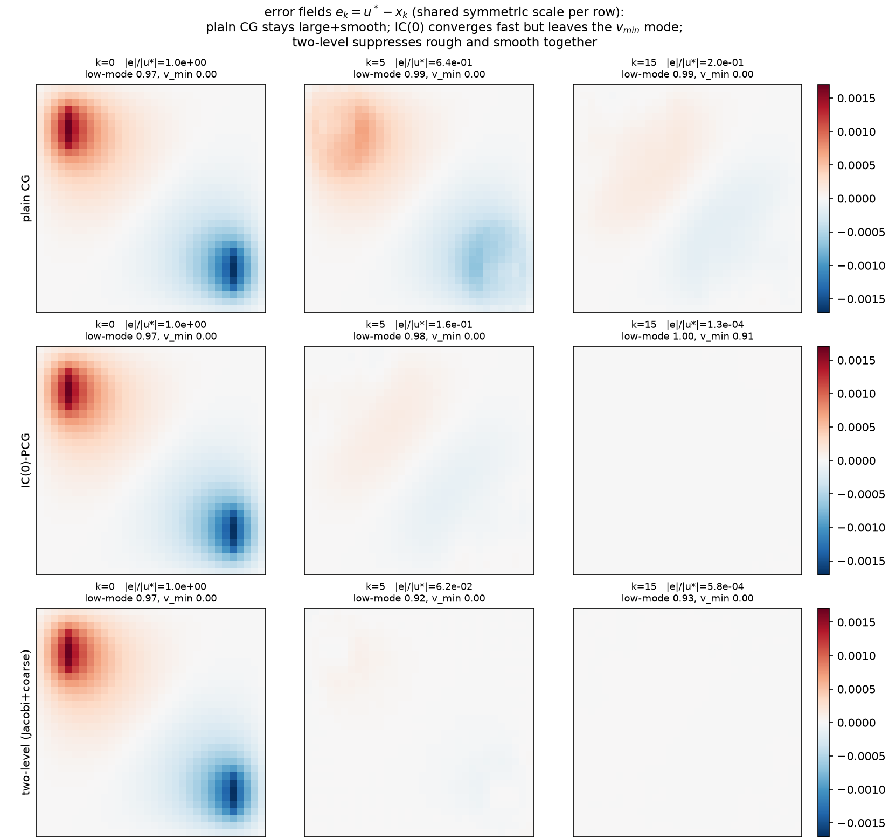
The measured numbers under each panel ($v_{\min}$ = lowest eigenvector of $A$; "low-15" = the amplitude fraction of $e_k$ in $A$'s lowest 15 eigenmodes, $\Vert V_{\mathrm{low}}^\top e_k\Vert /\Vert e_k\Vert $, and "$v_{\min}$ frac" $= \vert \langle v_{\min}, e_k\rangle\vert /\Vert e_k\Vert $ — norm fractions, not squared energies):
| $\Vert e_k\Vert /\Vert u^\star\Vert $ | $k=0$ | $k=5$ | $k=15$ | low-15 at $k{=}0/5/15$ | $v_{\min}$ frac at $k{=}0/5/15$ |
|---|---|---|---|---|---|
| plain CG | 1.0 | 0.643 | 0.200 | 0.974 / 0.991 / 0.989 | 0 / 0 / 0 (exact) |
| IC(0)-PCG | 1.0 | 0.156 | $1.31\times10^{-4}$ | 0.974 / 0.985 / 0.996 | 0.000 / 0.001 / 0.914 |
| two-level (Jac+coarse) | 1.0 | $6.20\times10^{-2}$ | $5.80\times10^{-4}$ | 0.974 / 0.916 / 0.928 | 0 / 0 / 0 (exact) |
Read the rows against §2–§5:
The symmetry footnote that the experiment forced. Those exact zeros in the $v_{\min}$ column are not luck. $v_{\min} = \sin(\pi x)\sin(\pi y)$ (verified as $A$'s lowest eigenvector, with the dense $\lambda_{\min}$ matching the analytic $8\sin^2(\pi h/2)/h^2 = 19.72$) is even under the 180° rotation $P$, while the rod RHS is exactly odd ($Pb = -b$, checked). Every method whose preconditioner commutes with $P$ — plain CG, coarse-only, Jacobi+coarse (the 4×4 block space is $P$-invariant) — keeps every iterate in the odd subspace, so its error is exactly orthogonal to $v_{\min}$ at every $k$ (measured at $10^{-12}$–$10^{-16}$). Only IC(0) leaks into the even subspace, because its lexicographic elimination ordering is not rotation-invariant — the one method that breaks §3's automorphism is the one whose lingering error is $v_{\min}$. (Hence the low-15 column as the parity-blind smoothness measure; the cut at 15 is degeneracy-safe because it completes the degenerate $(3,4)/(4,3)$ pair at ranks 13–14 and leaves the next pair, $(1,5)/(5,1)$ at ranks 15–16, out whole: $w_{14} < w_{15} = w_{16}$, 0-based.) A regression model's ordering is part of the model — 09 said it abstractly; here it decides which invariant subspace your error haunts.
§5.2 ranked the five methods by iterations and $\kappa$; report 14 §4's finding 4 already established that iteration counts are not cost. So here is the bill for the five runs above, in two cost currencies at once. Work is total flops under the same convention as 14 §4's accounting (PASS 30 there): 1 MAC = 2 flops, one $A$-matvec $= 2\,\mathrm{nnz}(A) = 9{,}984$, the six $2N$-flop vector operations of pcg.py's actual loop $= 12N = 12{,}288$ per iteration, and each preconditioner apply counted off its own algorithm — IC(0) as two sparse triangular solves at $2\,\mathrm{nnz}(L)$ each ($\mathrm{nnz}(L) = 3{,}008$ counted from the factor, so $12{,}032$), the coarse correction as restriction + dense 64×64 inverse-apply + prolongation ($1{,}984 + 8{,}192 + 1{,}024 = 11{,}200$). Span is critical-path depth in the work–span (Blelloch) model: the length of the longest dependency chain, i.e. wall-clock time on unboundedly many processors with free communication. Totals include the pcg pre-loop setup, counted off pcg.py's actual pre-loop code: $4N$ flops + one $M$-apply (the $\Vert b\Vert$ reduction, $z_0 = M(b)$, and the $r_0^\top z_0$ dot). One deliberate divergence from 14 §4: its setup term is "one apply and one dot" ($2N$ + apply), omitting the $\Vert b\Vert$ reduction the code performs, so its plain-CG total sits exactly $2N = 2{,}048$ flops below this convention — the per-iteration accounting is identical. One-time factorizations are excluded as amortized, as in 14 §4. Every constant carries a one-line justification in cost_models of results/grid_multiscale.json, and the table, both rankings, and the totals identity (total = iters × per-iter + setup, both currencies, all five methods) are machine-checked (PASS 38–40):
| $M^{-1}$ | its | flops / it | total flops | span / it | total span |
|---|---|---|---|---|---|
| none | 76 | 22,272 | 1,696,768 | 28 | 2,138 |
| coarse-only | 76 | 27,393 | 2,091,085 | 41 | 3,139 |
| two-level Jacobi+coarse | 48 | 35,520 | 1,722,304 | 42 | 2,040 |
| IC(0) | 39 | 34,304 | 1,353,984 | 406 | 16,222 |
| two-level IC(0)+coarse | 32 | 46,528 | 1,517,248 | 407 | 13,413 |
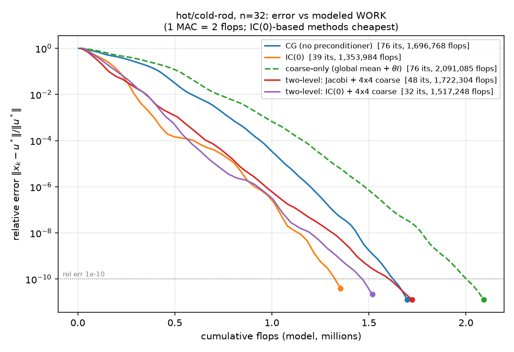
The work currency: per-iteration relative error against cumulative modeled flops. The two IC(0)-based methods are the two cheapest — IC(0) reaches $10^{-10}$ for 1,353,984 flops and two-level IC(0) for 1,517,248, undercutting plain CG's 1,696,768 (PASS 38): the triangular solves cost only $2\times2\,\mathrm{nnz}(L)$ flops and buy the biggest iteration cuts. Coarse-only, which cuts no iterations on this odd RHS, pays for its apply and finishes last at 2,091,085.
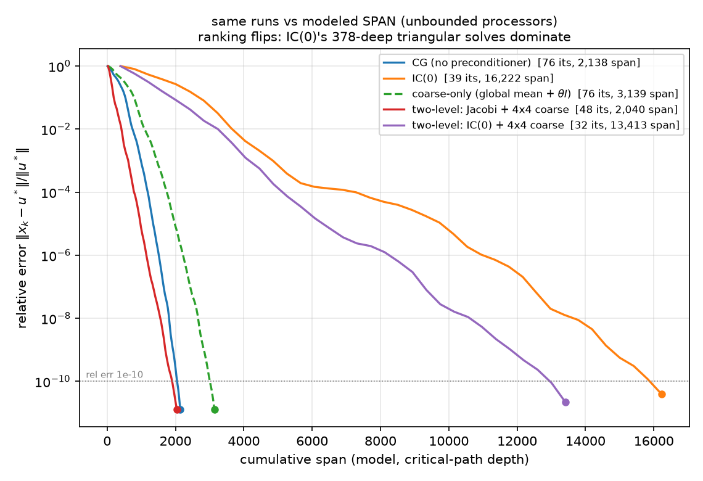
The span currency: the same five runs against cumulative critical-path depth — and the ranking flips (PASS 39). Two-level Jacobi finishes at depth 2,040, ahead even of plain CG (2,138); the flops winner IC(0) is now the loser at 16,222, ~8× deeper than the winner, with two-level IC(0) beside it at 13,413.
Where the spans come from: everything in a PCG iteration except the preconditioner is shallow — elementwise ops and AXPYs depth 1, the 5-point matvec depth 4 (five products in parallel, then a 3-deep sum tree), a dot product over $N = 1024$ a depth-10 binary tree — so the loop's critical path is depth 28 per iteration (matvec + two reductions + four elementwise ops; the $x$-update sits off-path). The coarse correction is shallow too: restriction 5 → dense inverse-apply 7 → prolongation 1, total 13, and the additive combination adds one (branches run in parallel, then one vector add) — a two-level Jacobi apply is depth 14. The IC(0) apply is not. In the forward solve $Lz = r$, node $(r,c)$'s unknown needs its W and N predecessors ($k{-}1$ and $k{-}n$ — exactly the cyan-circled pattern of §4), so the DAG's hyperplanes are the anti-diagonals $r + c = \mathrm{const}$: exactly $2n - 1 = 63$ sequential wavefronts. That is not assumed — PASS 37 topologically levelizes the actual factor's 1,984 strictly-lower nonzeros and finds longest path 63, with $\mathrm{level}(r,c) = r + c$ exactly and the largest wavefront 32 nodes wide. At depth 3 per wavefront (two MACs + a divide) that is 189 per solve, 378 for the sequentially-dependent $L$/$L^\top$ pair — a per-iteration depth of 406 vs two-level Jacobi's 42, which no iteration count of 39-vs-48 can repay.
The flip is the section's last moral, and it is structural, not accidental. An incomplete factorization is §3's ordered elimination: each innovation waits for its predecessors, and the wavefront schedule is the best the dependency DAG allows — the very sequentiality that makes the regressions good (each node conditions on already-whitened neighbors) is what resists parallelism. Jacobi scaling and coarse corrections condition on averages, and averages are reductions: $\log N$ depth, embarrassingly parallel. So the model that is cheapest per unit of work (IC(0), the flops column) is the most expensive per unit of depth, and vice versa (two-level Jacobi) — 14 §4's finding 4 said iterations are not cost; the two columns here sharpen it: even cost is not one number, and 13 §4.3's decoupling ladder, which ranks its rungs by iterations, would order them differently in either currency. One honest caveat: the span model assumes unbounded processors and free communication, so real hardware — a GPU with finite width, a CPU with real memory traffic — lands somewhere between the two columns; the table brackets the answer rather than giving it.
Assemble §§1–6 into the sentence the whole suite has been circling:
A preconditioner is a statistical model that predicts the value at each position from a subset of other positions, applied inside CG as an approximate whitener. Factor the surrogate as $M = L_M L_M^\top$; PCG is CG on $L_M^{-1}AL_M^{-\top}$ — the true precision in the coordinates the surrogate believes are white (09 §6) — and $\kappa(M^{-1}A)$, tempered by clustering (04), prices the model mismatch. The choice of conditioning set is the whole design space:
predict each node from… preconditioner measured here nothing (variances only) Jacobi inert on constant diagonal (05: 116 = 116; §5.2's $\theta I$) its stencil neighbors IC(0) ≈ Vecchia (deviation measured: ≤ 0.083, §4) 39 its, $\kappa$ 39.8; smooth ghost = 91% $v_{\min}$ by amplitude one global average coarse-only 76 its; models one direction, unexcited on odd RHS neighborhood averages two-level Jacobi+coarse 48 its, $\kappa$ 19.0 neighbors and averages two-level IC(0)+coarse 32 its, $\kappa$ 11.05 averages of averages, recursively multigrid (05 §5) the $O(N)$ endpoint of §5.3 a few dominant global factors Nyström (07) fails here: no dominant factors to keep a learned conditioning set NPO/NAMG (06), fitted Vecchia (10 §5) 30 its each, learned restriction = learned coarse regressors everything (exact regressions) complete Cholesky = direct solve one "iteration"; 343 fill entries at $n{=}8$ is the price
Dictionary delta — multiscale rows appended to 09 §8 and 10 §8 (all verified in grid_regressions_multiscale.py):
| Numerical linear algebra / PDE | Statistics / probability |
|---|---|
| Neumann series $A^{-1} = (\sum_k B^k)D^{-1}$, rate $\rho(B) = \cos(\pi h)$ | Green's function as discounted sum over killed lattice random walks; fitted rate 0.939693 = theory |
| Cholesky fill inside the bandwidth-$n$ band (343 entries at $n{=}8$) | Marginalization-induced regressions on the elimination wavefront; mean |coef| decays 0.2995 → 0.0005 with lateral distance |
| IC(0) vs KL-optimal sparse factor | Precision-side vs covariance-side truncated regression: identical on trees, ~22% coefficient deviation on the grid (Schäfer–Katzfuss–Owhadi) |
| Coarse-space vector $\mathbf 1$; deflation of the mean | Global-mean regressor; loadings $\beta_i = \mathrm{Cov}(u_i,\bar u)/\mathrm{Var}(\bar u)$, bridge-dome shaped (1.671 center / 0.351 corner) |
| Coarse correction $Z(Z^\top AZ)^{-1}Z^\top$; Galerkin $A_c$ | Least-squares regression on block averages ($A$-orthogonal projection); $R^2$: 0.152 (1 regressor) → 0.567 (16) |
| Smoother handles high frequencies, coarse grid the low | Residual correlation-length collapse after conditioning on averages (far-field |corr| 0.098 → 0.011) |
| Additive two-level $M^{-1} = M_{\mathrm{loc}}^{-1} + ZA_c^{-1}Z^\top$ | Predict from neighbors and neighborhood average, subtract both (76→32 its, $\kappa$ 440.7→11.05) |
| Multigrid hierarchy; learned restriction (NAMG) | Recursive regression on aggregates; learned coarse regressors |
| Preconditioner ordering (lexicographic IC(0)) breaks a domain symmetry | Model's variable ordering is part of the model: error leaks into the even subspace, lingering mode = $v_{\min}$ (91.4% by amplitude) |
| $\kappa$ improvement without iteration improvement (coarse-only, odd RHS) | Worst-case vs realized: a regressor orthogonal to the data is never exercised |
Everything cited here is 09/10's canon, now with grid-scale measurements: Rue & Held (2005) for the GMRF reading of §1; Pourahmadi (1999, 2011) for the sequential-regression parameterization of §3; Vecchia (1988) and Schäfer, Katzfuss & Owhadi (SISC 2021) for §4, whose IC(0)-vs-Vecchia gap this report is, to our knowledge, the suite's first explicit measurement of; Saad (Iterative Methods, §10.3.5) for the IC(0) recurrence as implemented; Trottenberg–Oosterlee–Schüller (2001) via 05 §5 for the multigrid endpoint of §5.3. Sibling reports: the operator and its spectrum, 01/02; the GRF right-hand side, 03; the PCG harness, the $\sqrt\kappa$ bound, and why clustering beats $\kappa$, 04; the classical baselines and the road to multigrid, 05; the learned restriction this report's §5.3 grounds, 06; the factor-analysis alternative and its instructive failure, 07; consolidated tables, 08; the dictionary, 09; the physics, 10; the roadmap, 00.
Coda. The 8×8 grid's two ArrayPlots began as a curiosity: one dense positive matrix, one three-valued sparse one. They end as the two halves of the suite's final sentence. The dense picture is what the field is — every node touching every node through too many walks to count. The sparse picture is what the field knows locally — four neighbors, coefficient ¼ each, variance $h^2/4$. Solving $Au = b$ is crossing from the second picture to the first, and every preconditioner in reports 05–07, this one included, is a wager about which regressors — neighbors, averages, factors, or learned attention — buy the most of that crossing per flop.